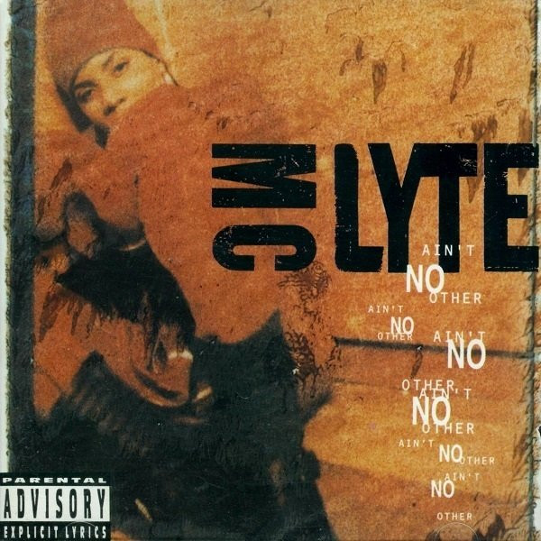
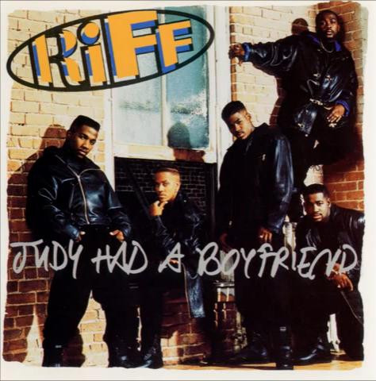

Teddy Riley Archive
A separate shelf for credits that don't belong on a decade page — straight hip-hop cuts and other one-offs, cover art first. Click a sleeve to flip it and read every pressing on the back, like flipping a record over to check the label.
Tracks in red are missing from the collection.

LPMC Lyte
Ain't No Other
MC Lyte — Ain't No Other
First Priority Music

SingleRiff
Judy Had A Boyfriend
Riff — Judy Had A Boyfriend
EMI Records